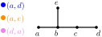
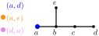
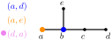
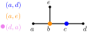
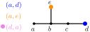
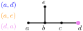
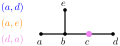
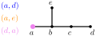
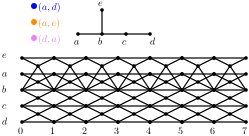
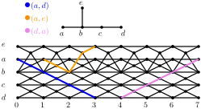

Input: A graph $G$, integers $k,\lambda\in \mathbb{N}$, set of agents $\mathcal{R}=\{R_i=(s_i,t_i)\mid i\in[k]\}$.
Dynamics: In each time step, each agent may
Question: Is there a schedule for the agents with Task-completion time (makespan) at most $\lambda$.








Variants of (T)MAPF has been extensively studied by researchers in computational geometry, artificial intelligence, and robotics
Annual workshops affiliated with the top AI conferences (e.g., AAAI, IJCAI) dedicated to MAPF
Posed as The Symposium on Computational Geometry (SoCG 2021) Challenge
Many algorithms, heuristics, websites, benchmarks, etc, dedicated to MAPF
Lemma: Makespan of any TMAPF istance is at most $1+\sum_{i\in [k]}dist(s_i,t_i)$ .
Main Idea:
Lemma: Makespan of any TMAPF istance is at most $1+\sum_{i\in [k]}dist(s_i,t_i)$ .
Question:
Can we efficiently find a solution $\zeta$ below this bound?
Theorem: TMAPF can be solved in $2^{\mathcal{O}(k^2\zeta)}n^{\mathcal{O}(1)}$ time.
Theorem: TMAPF is W[1]-hard and XP by $k$.
Theorem: TMAPF is W[1]-hard by $\zeta$.
Theorem: TMAPF with pairwise distinct terminals can be solved in $2^{\mathcal{O}(\zeta^3)}n^{\mathcal{O}(1)}$ time.


Observation: TMAPF is equivalent to Disjoint Paths in Time Expansion DAG.
Observation: TMAPF is equivalent to Disjoint Paths in Time Expansion DAG.
Lemma: TMAPF can be solved in $2^{\mathcal{O}(k\lambda)}n^{\mathcal{O}(1)}$ time.
Lemma: Two codirectional agents $R_1$ and $R_2$ have schedule of length $1+\max_{i\in[2]}dist(s_i,t_i)$.
Lemma: Two codirectional agents $R_1$ and $R_2$ have schedule of length $1+\max_{i\in[2]}dist(s_i,t_i)$.
Lemma: Two codirectional agents $R_1$ and $R_2$ have schedule of length $1+\max_{i\in[2]}dist(s_i,t_i)$.
Lemma: Two codirectional agents $R_1$ and $R_2$ have schedule of length $1+\max_{i\in[2]}dist(s_i,t_i)$.
Lemma: Two codirectional agents $R_1$ and $R_2$ have schedule of length $1+\max_{i\in[2]}dist(s_i,t_i)$.
Lemma: Two codirectional agents $R_1$ and $R_2$ have schedule of length $1+\max_{i\in[2]}dist(s_i,t_i)$.
Theorem: TMAPF can be solved in $2^{\mathcal{O}(k^2\zeta)}n^{\mathcal{O}(1)}$ time.
Alternative upper bounds. We were unable to prove or disprove $2\max_{i\in[k]}dist(s_i,t_i)+k$
XP vs paraNP-hard by $\zeta$?
(Parameterized) Complexity on restricted graph classes, such as planar graphs or grids/subgrids.